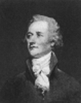
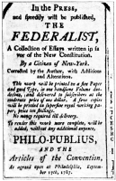

The Promise and the Difficulties of America
The rise of a young republic composed of thirteen states, each governed by officials popularly elected under constitutions drafted by "the plain people," was the most significant feature of the eighteenth century. The majority of the patriots whose labors and sacrifices had made this possible naturally looked upon their work and pronounced it good. Those Americans, however, who peered beneath the surface of things, saw that the Declaration of Independence, even if splendidly phrased, and paper constitutions, drawn by finest enthusiasm "uninstructed by experience," could not alone make the republic great and prosperous or even free. All around them they saw chaos in finance and in industry and perils for the immediate future.
The Weakness of the Articles of Confederation. —The government under the Articles of Confederation had neither the strength nor the resources necessary to cope with the problems of reconstruction left by the war. The sole organ of government was a Congress composed of from two to seven members from each state chosen as the legislature might direct and paid by the state. In determining all questions, each state had one vote—Delaware thus enjoying the same weight as Virginia. There was no president to enforce the laws. Congress was given power to select a committee of thirteen—one from each state—to act as an executive body when it was not in session; but this device, on being tried out, proved a failure. There was no system of national courts to which citizens and states could appeal for the protection of their rights or through which they could compel obedience to law. The two great powers of government, military and financial, were withheld. Congress, it is true, could authorize expenditures but had to rely upon the states for the payment of contributions to meet its bills. It could also order the establishment of an army, but it could only request the states to supply their respective quotas of soldiers. It could not lay taxes nor bring any pressure to bear upon a single citizen in the whole country. It could act only through the medium of the state governments.
Financial and Commercial Disorders. —In the field of public finance, the disorders were pronounced.
The huge debt incurred during the war was still outstanding. Congress was unable to pay either the interest or the principal. Public creditors were in despair, as the market value of their bonds sank to twenty-five or even ten cents on the dollar. The current bills of Congress were unpaid. As some one complained, there was not enough money in the treasury to buy pen and ink with which to record the transactions of the shadow legislature. The currency was in utter chaos. Millions of dollars in notes issued by Congress had become mere trash worth a cent or two on the dollar. There was no other expression of contempt so forceful as the popular saying: "not worth a Continental." To make matters worse, several of the states were pouring new streams of paper money from the press. Almost the only good money in circulation consisted of English, French, and Spanish coins, and the public was even defrauded by them because money changers were busy clipping and filing away the metal. Foreign commerce was unsettled. The entire British system of trade discrimination was turned against the Americans, and Congress, having no
power to regulate foreign commerce, was unable to retaliate or to negotiate treaties which it could enforce.
Domestic commerce was impeded by the jealousies of the states, which erected tariff barriers against their neighbors. The condition of the currency made the exchange of money and goods extremely difficult, and, as if to increase the confusion, backward states enacted laws hindering the prompt collection of debts within their borders—an evil which nothing but a national system of courts could cure.
Congress in Disrepute. —With treaties set at naught by the states, the laws unenforced, the treasury empty, and the public credit gone, the Congress of the United States fell into utter disrepute. It called upon the states to pay their quotas of money into the treasury, only to be treated with contempt. Even its own members looked upon it as a solemn futility. Some of the ablest men refused to accept election to it, and many who did take the doubtful honor failed to attend the sessions. Again and again it was impossible to secure a quorum for the transaction of business.
Troubles of the State Governments. —The state governments, free to pursue their own course with no interference from without, had almost as many difficulties as the Congress. They too were loaded with revolutionary debts calling for heavy taxes upon an already restive population. Oppressed by their financial burdens and discouraged by the fall in prices which followed the return of peace, the farmers of several states joined in a concerted effort and compelled their legislatures to issue large sums of paper money. The currency fell in value, but nevertheless it was forced on unwilling creditors to square old accounts.
In every part of the country legislative action fluctuated violently. Laws were made one year only to be repealed the next and reënacted the third year. Lands were sold by one legislature and the sales were canceled by its successor. Uncertainty and distrust were the natural consequences. Men of substance longed for some power that would forbid states to issue bills of credit, to make paper money legal tender in payment of debts, or to impair the obligation of contracts. Men heavily in debt, on the other hand, urged even more drastic action against creditors.
So great did the discontent of the farmers in New Hampshire become in 1786 that a mob surrounded the legislature, demanding a repeal of the taxes and the issuance of paper money. It was with difficulty that an armed rebellion was avoided. In Massachusetts the malcontents, under the leadership of Daniel Shays, a captain in the Revolutionary army, organized that same year open resistance to the government of the state. Shays and his followers protested against the conduct of creditors in foreclosing mortgages upon the debt-burdened farmers, against the lawyers for increasing the costs of legal proceedings, against the senate of the state the members of which were apportioned among the towns on the basis of the amount of taxes paid, against heavy taxes, and against the refusal of the legislature to issue paper money. They seized the towns of Worcester and Springfield and broke up the courts of justice. All through the western part of the state the revolt spread, sending a shock of alarm to every center and section of the young republic. Only by the most vigorous action was Governor Bowdoin able to quell the uprising; and when that task was accomplished, the state government did not dare to execute any of the prisoners because they had so many sympathizers. Moreover, Bowdoin and several members of the legislature who had been most zealous in their attacks on the insurgents were defeated at the ensuing election. The need of national assistance for state governments in times of domestic violence was everywhere emphasized by men who were opposed to revolutionary acts.
Alarm over Dangers to the Republic. —Leading American citizens, watching the drift of affairs, were slowly driven to the conclusion that the new ship of state so proudly launched a few years before was careening into anarchy. "The facts of our peace and independence," wrote a friend of Washington, "do not at present wear so promising an appearance as I had fondly painted in my mind. The prejudices, jealousies, and turbulence of the people at times almost stagger my confidence in our political establishments; and almost occasion me to think that they will show themselves unworthy of the noble prize for which we have contended."

Washington himself was profoundly discouraged. On hearing of Shays's rebellion, he exclaimed: "What, gracious God, is man that there should be such inconsistency and perfidiousness in his conduct! It is but the other day that we were shedding our blood to obtain the constitutions under which we now live—constitutions of our own choice and making—and now we are unsheathing our sword to overturn them." The same year he burst out in a lament over rumors of restoring royal government. "I am told that even respectable characters speak of a monarchical government without horror. From thinking proceeds speaking. Hence to acting is often but a single step. But how irresistible and tremendous! What a triumph for our enemies to verify their predictions! What a triumph for the advocates of despotism to find that we are incapable of governing ourselves!"
Congress Attempts Some Reforms. —The Congress was not indifferent to the events that disturbed Washington. On the contrary it put forth many efforts to check tendencies so dangerous to finance, commerce, industries, and the Confederation itself. In 1781, even before the treaty of peace was signed, the Congress, having found out how futile were its taxing powers, carried a resolution of amendment to the Articles of Confederation, authorizing the levy of a moderate duty on imports. Yet this mild measure was rejected by the states. Two years later the Congress prepared another amendment sanctioning the levy of duties on imports, to be collected this time by state officers and applied to the payment of the public debt.
This more limited proposal, designed to save public credit, likewise failed. In 1786, the Congress made a third appeal to the states for help, declaring that they had been so irregular and so negligent in paying their quotas that further reliance upon that mode of raising revenues was dishonorable and dangerous.
The Calling of a Constitutional Convention
Hamilton and Washington Urge Reform. —The attempts at reform by the Congress were accompanied by demand for, both within and without that body, a convention to frame a new plan of government. In 1780, the youthful Alexander Hamilton, realizing the weakness of the Articles, so widely discussed, proposed a general convention for the purpose of drafting a new constitution on entirely different principles. With tireless energy he strove to bring his countrymen to his view. Washington, agreeing with him on every point, declared, in a circular letter to the governors, that the duration of the union would be short unless there was lodged somewhere a supreme power "to regulate and govern the general concerns of the confederated republic." The governor of Massachusetts, disturbed by the growth of discontent all about him, suggested to the state legislature in 1785 the advisability of a national convention to enlarge the powers of the Congress. The legislature approved the plan, but did not press it to a conclusion.
Alexander Hamilton
The Annapolis Convention. —Action finally came from the South. The Virginia legislature, taking things into its own hands, called a conference of delegates at Annapolis to consider matters of taxation and commerce. When the convention assembled in 1786, it was found that only five states had taken the trouble to send representatives. The leaders were deeply discouraged, but the resourceful Hamilton, a delegate from New York, turned the affair to good account. He secured the adoption of a resolution,
calling upon the Congress itself to summon another convention, to meet at Philadelphia.
A National Convention Called (1787). —The Congress, as tardy as ever, at last decided in February, 1787, to issue the call. Fearing drastic changes, however, it restricted the convention to "the sole and express purpose of revising the Articles of Confederation." Jealous of its own powers, it added that any alterations proposed should be referred to the Congress and the states for their approval.
Every state in the union, except Rhode Island, responded to this call. Indeed some of the states, having the Annapolis resolution before them, had already anticipated the Congress by selecting delegates before the formal summons came. Thus, by the persistence of governors, legislatures, and private citizens, there was brought about the long-desired national convention. In May, 1787, it assembled in Philadelphia.
The Eminent Men of the Convention. —On the roll of that memorable convention were fifty-five men, at least half of whom were acknowledged to be among the foremost statesmen and thinkers in America.
Every field of statecraft was represented by them: war and practical management in Washington, who was chosen president of the convention; diplomacy in Franklin, now old and full of honor in his own land as well as abroad; finance in Alexander Hamilton and Robert Morris; law in James Wilson of Pennsylvania; the philosophy of government in James Madison, called the "father of the Constitution." They were not theorists but practical men, rich in political experience and endowed with deep insight into the springs of human action. Three of them had served in the Stamp Act Congress: Dickinson of Delaware, William Samuel Johnson of Connecticut, and John Rutledge of South Carolina. Eight had been signers of the Declaration of Independence: Read of Delaware, Sherman of Connecticut, Wythe of Virginia, Gerry of Massachusetts, Franklin, Robert Morris, George Clymer, and James Wilson of Pennsylvania. All but twelve had at some time served in the Continental Congress and eighteen were members of that body in the spring of 1787. Washington, Hamilton, Mifflin, and Charles Pinckney had been officers in the Revolutionary army. Seven of the delegates had gained political experience as governors of states. "The convention as a whole," according to the historian Hildreth, "represented in a marked manner the talent, intelligence, and especially the conservative sentiment of the country."
The Framing of the Constitution
Problems Involved. —The great problems before the convention were nine in number: (1) Shall the Articles of Confederation be revised or a new system of government constructed? (2) Shall the government be founded on states equal in power as under the Articles or on the broader and deeper foundation of population? (3) What direct share shall the people have in the election of national officers?
(4) What shall be the qualifications for the suffrage? (5) How shall the conflicting interests of the commercial and the planting states be balanced so as to safeguard the essential rights of each? (6) What shall be the form of the new government? (7) What powers shall be conferred on it? (8) How shall the state legislatures be restrained from their attacks on property rights such as the issuance of paper money?
(9) Shall the approval of all the states be necessary, as under the Articles, for the adoption and amendment of the Constitution?
Revision of the Articles or a New Government? —The moment the first problem was raised, representatives of the small states, led by William Paterson of New Jersey, were on their feet. They feared that, if the Articles were overthrown, the equality and rights of the states would be put in jeopardy. Their protest was therefore vigorous. They cited the call issued by the Congress in summoning the convention which specifically stated that they were assembled for "the sole and express purpose of revising the Articles of Confederation." They cited also their instructions from their state legislatures, which authorized them to "revise and amend" the existing scheme of government, not to make a revolution in it. To depart from the authorization laid down by the Congress and the legislatures would be to exceed their powers, they argued, and to betray the trust reposed in them by their countrymen.
To their contentions, Randolph of Virginia replied: "When the salvation of the republic is at stake, it would be treason to our trust not to propose what we find necessary." Hamilton, reminding the delegates that their work was still subject to the approval of the states, frankly said that on the point of their powers he had no scruples. With the issue clear, the convention cast aside the Articles as if they did not exist and proceeded to the work of drawing up a new constitution, "laying its foundations on such principles and organizing its powers in such form" as to the delegates seemed "most likely to affect their safety and happiness."
A Government Founded on States or on People?—The Compromise. —Defeated in their attempt to limit the convention to a mere revision of the Articles, the spokesmen of the smaller states redoubled their efforts to preserve the equality of the states. The signal for a radical departure from the Articles on this point was given early in the sessions when Randolph presented "the Virginia plan." He proposed that the new national legislature consist of two houses, the members of which were to be apportioned among the states according to their wealth or free white population, as the convention might decide. This plan was vehemently challenged. Paterson of New Jersey flatly avowed that neither he nor his state would ever bow to such tyranny. As an alternative, he presented "the New Jersey plan" calling for a national legislature of one house representing states as such, not wealth or people—a legislature in which all states, large or small, would have equal voice. Wilson of Pennsylvania, on behalf of the more populous states, took up the gauntlet which Paterson had thrown down. It was absurd, he urged, for 180,000 men in one state to have the same weight in national counsels as 750,000 men in another state. "The gentleman from New Jersey,"
he said, "is candid. He declares his opinion boldly.... I will be equally candid.... I will never confederate on his principles." So the bitter controversy ran on through many exciting sessions.
Greek had met Greek. The convention was hopelessly deadlocked and on the verge of dissolution, "scarce held together by the strength of a hair," as one of the delegates remarked. A crash was averted only by a compromise. Instead of a Congress of one house as provided by the Articles, the convention agreed upon a legislature of two houses. In the Senate, the aspirations of the small states were to be satisfied, for each state was given two members in that body. In the formation of the House of Representatives, the larger states were placated, for it was agreed that the members of that chamber were to be apportioned among the states on the basis of population, counting three-fifths of the slaves.
The Question of Popular Election. —The method of selecting federal officers and members of Congress also produced an acrimonious debate which revealed how deep-seated was the distrust of the capacity of the people to govern themselves. Few there were who believed that no branch of the government should be elected directly by the voters; still fewer were there, however, who desired to see all branches so chosen.
One or two even expressed a desire for a monarchy. The dangers of democracy were stressed by Gerry of Massachusetts: "All the evils we experience flow from an excess of democracy. The people do not want virtue but are the dupes of pretended patriots.... I have been too republican heretofore but have been taught by experience the danger of a leveling spirit." To the "democratic licentiousness of the state legislatures,"
Randolph sought to oppose a "firm senate." To check the excesses of popular government Charles Pinckney of South Carolina declared that no one should be elected President who was not worth $100,000
and that high property qualifications should be placed on members of Congress and judges. Other members of the convention were stoutly opposed to such "high-toned notions of government." Franklin and Wilson, both from Pennsylvania, vigorously championed popular election; while men like Madison insisted that at least one part of the government should rest on the broad foundation of the people.
Out of this clash of opinion also came compromise. One branch, the House of Representatives, it was agreed, was to be elected directly by the voters, while the Senators were to be elected indirectly by the state legislatures. The President was to be chosen by electors selected as the legislatures of the states might determine, and the judges of the federal courts, supreme and inferior, by the President and the Senate.
The Question of the Suffrage. —The battle over the suffrage was sharp but brief. Gouverneur Morris
proposed that only land owners should be permitted to vote. Madison replied that the state legislatures, which had made so much trouble with radical laws, were elected by freeholders. After the debate, the delegates, unable to agree on any property limitations on the suffrage, decided that the House of Representatives should be elected by voters having the "qualifications requisite for electors of the most numerous branch of the state legislature." Thus they accepted the suffrage provisions of the states.
The Balance between the Planting and the Commercial States. —After the debates had gone on for a few weeks, Madison came to the conclusion that the real division in the convention was not between the large and the small states but between the planting section founded on slave labor and the commercial North. Thus he anticipated by nearly three-quarters of a century "the irrepressible conflict." The planting states had neither the free white population nor the wealth of the North. There were, counting Delaware, six of them as against seven commercial states. Dependent for their prosperity mainly upon the sale of tobacco, rice, and other staples abroad, they feared that Congress might impose restraints upon their enterprise. Being weaker in numbers, they were afraid that the majority might lay an unfair burden of taxes upon them.
Representation and Taxation. —The Southern members of the convention were therefore very anxious to secure for their section the largest possible representation in Congress, and at the same time to restrain the taxing power of that body. Two devices were thought adapted to these ends. One was to count the slaves as people when apportioning representatives among the states according to their respective populations; the other was to provide that direct taxes should be apportioned among the states, in proportion not to their wealth but to the number of their free white inhabitants. For obvious reasons the Northern delegates objected to these proposals. Once more a compromise proved to be the solution. It was agreed that not all the slaves but three-fifths of them should be counted for both purposes—representation and direct taxation.
Commerce and the Slave Trade. —Southern interests were also involved in the project to confer upon Congress the power to regulate interstate and foreign commerce. To the manufacturing and trading states this was essential. It would prevent interstate tariffs and trade jealousies; it would enable Congress to protect American manufactures and to break down, by appropriate retaliations, foreign discriminations against American commerce. To the South the proposal was menacing because tariffs might interfere with the free exchange of the produce of plantations in European markets, and navigation acts might confine the carrying trade to American, that is Northern, ships. The importation of slaves, moreover, it was feared might be heavily taxed or immediately prohibited altogether.
The result of this and related controversies was a debate on the merits of slavery. Gouverneur Morris delivered his mind and heart on that subject, denouncing slavery as a nefarious institution and the curse of heaven on the states in which it prevailed. Mason of Virginia, a slaveholder himself, was hardly less outspoken, saying: "Slavery discourages arts and manufactures. The poor despise labor when performed by slaves. They prevent the migration of whites who really strengthen and enrich a country."
The system, however, had its defenders. Representatives from South Carolina argued that their entire economic life rested on slave labor and that the high death rate in the rice swamps made continuous importation necessary. Ellsworth of Connecticut took the ground that the convention should not meddle with slavery. "The morality or wisdom of slavery," he said, "are considerations belonging to the states.
What enriches a part enriches the whole." To the future he turned an untroubled face: "As population increases, poor laborers will be so plenty as to render slaves useless. Slavery in time will not be a speck in our country." Virginia and North Carolina, already overstocked with slaves, favored prohibiting the traffic in them; but South Carolina was adamant. She must have fresh supplies of slaves or she would not federate.
So it was agreed that, while Congress might regulate foreign trade by majority vote, the importation of slaves should not be forbidden before the lapse of twenty years, and that any import tax should not exceed
$10 a head. At the same time, in connection with the regulation of foreign trade, it was stipulated that a two-thirds vote in the Senate should be necessary in the ratification of treaties. A further concession to the South was made in the provision for the return of runaway slaves—a provision also useful in the North, where indentured servants were about as troublesome as slaves in escaping from their masters.
The Form of the Government. —As to the details of the frame of government and the grand principles involved, the opinion of the convention ebbed and flowed, decisions being taken in the heat of debate, only to be revoked and taken again.
The Executive. —There was general agreement that there should be an executive branch; for reliance upon Congress to enforce its own laws and treaties had been a broken reed. On the character and functions of the executive, however, there were many views. The New Jersey plan called for a council selected by the Congress; the Virginia plan provided that the executive branch should be chosen by the Congress but did not state whether it should be composed of one or several persons. On this matter the convention voted first one way and then another; finally it agreed on a single executive chosen indirectly by electors selected as the state legislatures might decide, serving for four years, subject to impeachment, and endowed with regal powers in the command of the army and the navy and in the enforcement of the laws.
The Legislative Branch—Congress. —After the convention had made the great compromise between the large and small commonwealths by giving representation to states in the Senate and to population in the House, the question of methods of election had to be decided. As to the House of Representatives it was readily agreed that the members should be elected by direct popular vote. There was also easy agreement on the proposition that a strong Senate was needed to check the "turbulence" of the lower house. Four devices were finally selected to accomplish this purpose. In the first place, the Senators were not to be chosen directly by the voters but by the legislatures of the states, thus removing their election one degree from the populace. In the second place, their term was fixed at six years instead of two, as in the case of the House. In the third place, provision was made for continuity by having only one-third of the members go out at a time while two-thirds remained in service. Finally, it was provided that Senators must be at least thirty years old while Representatives need be only twenty-five.
The Judiciary. —The need for federal courts to carry out the law was hardly open to debate. The feebleness of the Articles of Confederation was, in a large measure, attributed to the want of a judiciary to hold states and individuals in obedience to the laws and treaties of the union. Nevertheless on this point the advocates of states' rights were extremely sensitive. They looked with distrust upon judges appointed at the national capital and emancipated from local interests and traditions; they remembered with what insistence they had claimed against Britain the right of local trial by jury and with what consternation they had viewed the proposal to make colonial judges independent of the assemblies in the matter of their salaries. Reluctantly they yielded to the demand for federal courts, consenting at first only to a supreme court to review cases heard in lower state courts and finally to such additional inferior courts as Congress might deem necessary.
The System of Checks and Balances. —It is thus apparent that the framers of the Constitution, in shaping the form of government, arranged for a distribution of power among three branches, executive, legislative, and judicial. Strictly speaking we might say four branches, for the legislature, or Congress, was composed of two houses, elected in different ways, and one of them, the Senate, was made a check on the President through its power of ratifying treaties and appointments. "The accumulation of all powers, legislative, executive, and judicial, in the same hands," wrote Madison, "whether of one, a few, or many, and whether hereditary, self-appointed, or elective, may justly be pronounced the very definition of tyranny." The devices which the convention adopted to prevent such a centralization of authority were exceedingly ingenious and well calculated to accomplish the purposes of the authors.
The legislature consisted of two houses, the members of which were to be apportioned on a different basis, elected in different ways, and to serve for different terms. A veto on all its acts was vested in a President
elected in a manner not employed in the choice of either branch of the legislature, serving for four years, and subject to removal only by the difficult process of impeachment. After a law had run the gantlet of both houses and the executive, it was subject to interpretation and annulment by the judiciary, appointed by the President with the consent of the Senate and serving for life. Thus it was made almost impossible for any political party to get possession of all branches of the government at a single popular election. As Hamilton remarked, the friends of good government considered "every institution calculated to restrain the excess of law making and to keep things in the same state in which they happen to be at any given period as more likely to do good than harm."
The Powers of the Federal Government. —On the question of the powers to be conferred upon the new government there was less occasion for a serious dispute. Even the delegates from the small states agreed with those from Massachusetts, Pennsylvania, and Virginia that new powers should be added to those intrusted to Congress by the Articles of Confederation. The New Jersey plan as well as the Virginia plan recognized this fact. Some of the delegates, like Hamilton and Madison, even proposed to give Congress a general legislative authority covering all national matters; but others, frightened by the specter of nationalism, insisted on specifying each power to be conferred and finally carried the day.
Taxation and Commerce. —There were none bold enough to dissent from the proposition that revenue must be provided to pay current expenses and discharge the public debt. When once the dispute over the apportionment of direct taxes among the slave states was settled, it was an easy matter to decide that Congress should have power to lay and collect taxes, duties, imposts, and excises. In this way the national government was freed from dependence upon stubborn and tardy legislatures and enabled to collect funds directly from citizens. There were likewise none bold enough to contend that the anarchy of state tariffs and trade discriminations should be longer endured. When the fears of the planting states were allayed and the "bargain" over the importation of slaves was reached, the convention vested in Congress the power to regulate foreign and interstate commerce.
National Defense. —The necessity for national defense was realized, though the fear of huge military establishments was equally present. The old practice of relying on quotas furnished by the state legislatures was completely discredited. As in the case of taxes a direct authority over citizens was demanded. Congress was therefore given full power to raise and support armies and a navy. It could employ the state militia when desirable; but it could at the same time maintain a regular army and call directly upon all able-bodied males if the nature of a crisis was thought to require it.
The "Necessary and Proper" Clause. —To the specified power vested in Congress by the Constitution, the advocates of a strong national government added a general clause authorizing it to make all laws
"necessary and proper" for carrying into effect any and all of the enumerated powers. This clause, interpreted by that master mind, Chief Justice Marshall, was later construed to confer powers as wide as the requirements of a vast country spanning a continent and taking its place among the mighty nations of the earth.
Restraints on the States. —Framing a government and endowing it with large powers were by no means the sole concern of the convention. Its very existence had been due quite as much to the conduct of the state legislatures as to the futilities of a paralyzed Continental Congress. In every state, explains Marshall in his Life of Washington, there was a party of men who had "marked out for themselves a more indulgent course. Viewing with extreme tenderness the case of the debtor, their efforts were unceasingly directed to his relief. To exact a faithful compliance with contracts was, in their opinion, a harsh measure which the people could not bear. They were uniformly in favor of relaxing the administration of justice, of affording facilities for the payment of debts, or of suspending their collection, and remitting taxes."
The legislatures under the dominance of these men had enacted paper money laws enabling debtors to discharge their obligations more easily. The convention put an end to such practices by providing that no
state should emit bills of credit or make anything but gold or silver legal tender in the payment of debts.
The state legislatures had enacted laws allowing men to pay their debts by turning over to creditors land or personal property; they had repealed the charter of an endowed college and taken the management from the hands of the lawful trustees; and they had otherwise interfered with the enforcement of private agreements. The convention, taking notice of such matters, inserted a clause forbidding states "to impair the obligation of contracts." The more venturous of the radicals had in Massachusetts raised the standard of revolt against the authorities of the state. The convention answered by a brief sentence to the effect that the President of the United States, to be equipped with a regular army, would send troops to suppress domestic insurrections whenever called upon by the legislature or, if it was not in session, by the governor of the state. To make sure that the restrictions on the states would not be dead letters, the federal Constitution, laws, and treaties were made the supreme law of the land, to be enforced whenever necessary by a national judiciary and executive against violations on the part of any state authorities.
Provisions for Ratification and Amendment. —When the frame of government had been determined, the powers to be vested in it had been enumerated, and the restrictions upon the states had been written into the bond, there remained three final questions. How shall the Constitution be ratified? What number of states shall be necessary to put it into effect? How shall it be amended in the future?
On the first point, the mandate under which the convention was sitting seemed positive. The Articles of Confederation were still in effect. They provided that amendments could be made only by unanimous adoption in Congress and the approval of all the states. As if to give force to this provision of law, the call for the convention had expressly stated that all alterations and revisions should be reported to Congress for adoption or rejection, Congress itself to transmit the document thereafter to the states for their review.
To have observed the strict letter of the law would have defeated the purposes of the delegates, because Congress and the state legislatures were openly hostile to such drastic changes as had been made.
Unanimous ratification, as events proved, would have been impossible. Therefore the delegates decided that the Constitution should be sent to Congress with the recommendation that it, in turn, transmit the document, not to the state legislatures, but to conventions held in the states for the special object of deciding upon ratification. This process was followed. It was their belief that special conventions would be more friendly than the state legislatures.
The convention was equally positive in dealing with the problem of the number of states necessary to establish the new Constitution. Attempts to change the Articles had failed because amendment required the approval of every state and there was always at least one recalcitrant member of the union. The opposition to a new Constitution was undoubtedly formidable. Rhode Island had even refused to take part in framing it, and her hostility was deep and open. So the convention cast aside the provision of the Articles of Confederation which required unanimous approval for any change in the plan of government; it decreed that the new Constitution should go into effect when ratified by nine states.
In providing for future changes in the Constitution itself the convention also thrust aside the old rule of unanimous approval, and decided that an amendment could be made on a two-thirds vote in both houses of Congress and ratification by three-fourths of the states. This change was of profound significance. Every state agreed to be bound in the future by amendments duly adopted even in case it did not approve them itself. America in this way set out upon the high road that led from a league of states to a nation.
The Struggle over Ratification
On September 17, 1787, the Constitution, having been finally drafted in clear and simple language, a model to all makers of fundamental law, was adopted. The convention, after nearly four months of debate in secret session, flung open the doors and presented to the Americans the finished plan for the new

government. Then the great debate passed to the people.
An Advertisement of The Federalist
The Opposition. —Storms of criticism at once descended upon the Constitution. "Fraudulent usurpation!"
exclaimed Gerry, who had refused to sign it. "A monster" out of the "thick veil of secrecy," declaimed a Pennsylvania newspaper. "An iron-handed despotism will be the result," protested a third. "We, 'the low-born,'" sarcastically wrote a fourth, "will now admit the 'six hundred well-born' immediately to establish this most noble, most excellent, and truly divine constitution." The President will become a king; Congress will be as tyrannical as Parliament in the old days; the states will be swallowed up; the rights of the people will be trampled upon; the poor man's justice will be lost in the endless delays of the federal courts—such was the strain of the protests against ratification.
Defense of the Constitution. —Moved by the tempest of opposition, Hamilton, Madison, and Jay took up their pens in defense of the Constitution. In a series of newspaper articles they discussed and expounded with eloquence, learning, and dignity every important clause and provision of the proposed plan. These papers, afterwards collected and published in a volume known as The Federalist, form the finest textbook on the Constitution that has ever been printed. It takes its place, moreover, among the wisest and weightiest treatises on government ever written in any language in any time. Other men, not so gifted, were no less earnest in their support of ratification. In private correspondence, editorials, pamphlets, and letters to the newspapers, they urged their countrymen to forget their partisanship and accept a Constitution which, in spite of any defects great or small, was the only guarantee against dissolution and warfare at home and dishonor and weakness abroad.
Celebrating the Ratification
Celebrating the Ratification
The Action of the State Conventions. —Before the end of the year, 1787, three states had ratified the Constitution: Delaware and New Jersey unanimously and Pennsylvania after a short, though savage, contest. Connecticut and Georgia followed early the next year. Then came the battle royal in Massachusetts, ending in ratification in February by the narrow margin of 187 votes to 168. In the spring came the news that Maryland and South Carolina were "under the new roof." On June 21, New Hampshire, where the sentiment was at first strong enough to defeat the Constitution, joined the new republic, influenced by the favorable decision in Massachusetts. Swift couriers were sent to carry the news to New York and Virginia, where the question of ratification was still undecided. Nine states had accepted it and were united, whether more saw fit to join or not.
Meanwhile, however, Virginia, after a long and searching debate, had given her approval by a narrow margin, leaving New York as the next seat of anxiety. In that state the popular vote for the delegates to the
convention had been clearly and heavily against ratification. Events finally demonstrated the futility of resistance, and Hamilton by good judgment and masterly arguments was at last able to marshal a majority of thirty to twenty-seven votes in favor of ratification.
The great contest was over. All the states, except North Carolina and Rhode Island, had ratified. "The sloop Anarchy," wrote an ebullient journalist, "when last heard from was ashore on Union rocks."
The First Election. —In the autumn of 1788, elections were held to fill the places in the new government.
Public opinion was overwhelmingly in favor of Washington as the first President. Yielding to the importunities of friends, he accepted the post in the spirit of public service. On April 30, 1789, he took the oath of office at Federal Hall in New York City. "Long live George Washington, President of the United States!" cried Chancellor Livingston as soon as the General had kissed the Bible. The cry was caught by the assembled multitude and given back. A new experiment in popular government was launched.
References
M. Farrand, The Framing of the Constitution of the United States.
P.L. Ford, Essays on the Constitution of the United States.
The Federalist (in many editions).
G. Hunt, Life of James Madison.
A.C. McLaughlin, The Confederation and the Constitution (American Nation Series).
Questions
1. Account for the failure of the Articles of Confederation.
2. Explain the domestic difficulties of the individual states.
3. Why did efforts at reform by the Congress come to naught?
4. Narrate the events leading up to the constitutional convention.
5. Who were some of the leading men in the convention? What had been their previous training?
6. State the great problems before the convention.
7. In what respects were the planting and commercial states opposed? What compromises were reached?
8. Show how the "check and balance" system is embodied in our form of government.
9. How did the powers conferred upon the federal government help cure the defects of the Articles of Confederation?
10. In what way did the provisions for ratifying and amending the Constitution depart from the old system?
11. What was the nature of the conflict over ratification?
English Treatment of American Commerce. —Callender, Economic History of the United States, pp.
210-220.
Financial Condition of the United States. —Fiske, Critical Period of American History, pp. 163-186.
Disordered Commerce. —Fiske, pp. 134-162.
Selfish Conduct of the States. —Callender, pp. 185-191.
The Failure of the Confederation. —Elson, History of the United States, pp. 318-326.
Formation of the Constitution. —(1) The plans before the convention, Fiske, pp. 236-249; (2) the great compromise, Fiske, pp. 250-255; (3) slavery and the convention, Fiske, pp. 256-266; and (4) the frame of government, Fiske, pp. 275-301; Elson, pp. 328-334.
Biographical Studies. —Look up the history and services of the leaders in the convention in any good encyclopedia.
Ratification of the Constitution. —Hart, History Told by Contemporaries, Vol. III, pp. 233-254; Elson, pp. 334-340.
Source Study. —Compare the Constitution and Articles of Confederation under the following heads: (1) frame of government; (2) powers of Congress; (3) limits on states; and (4) methods of amendment. Every line of the Constitution should be read and re-read in the light of the historical circumstances set forth in this chapter.
{kind=link}